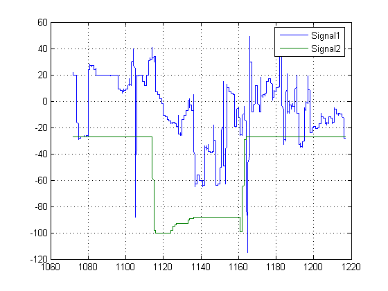
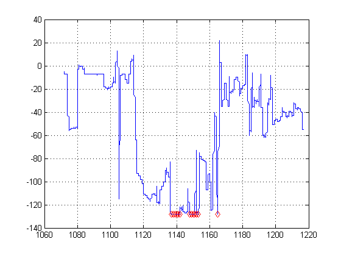
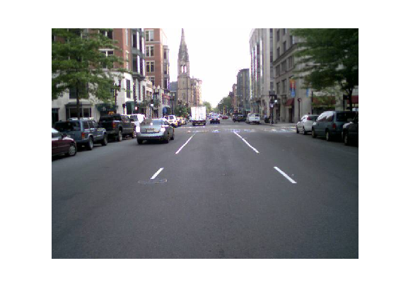
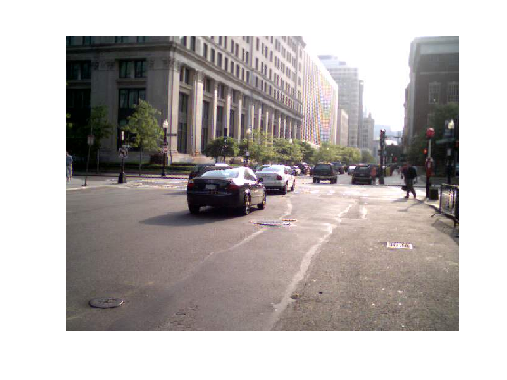
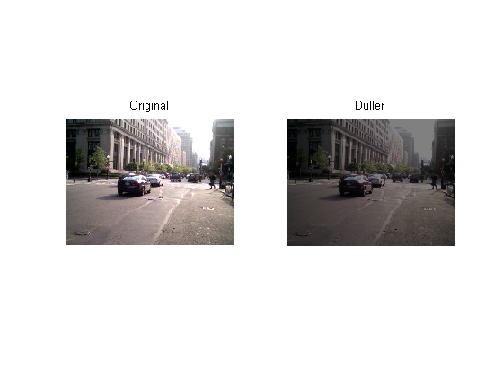
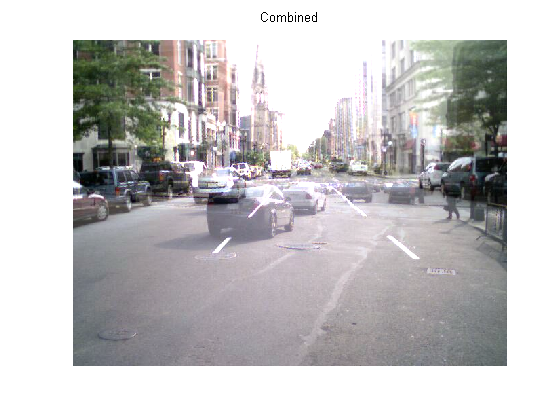

This gives examples of performing arithmetic on signal and image integer data.
Load measurement datasets comprising signals from four instruments using 8 and 16-bit A-to-D's resulting in data saved as int8, int16 and uint16. Time is stored as uint16.
load integersignal % Look at variables whos Signal1 Signal2 Signal3 Signal4 Time1
Name Size Bytes Class Signal1 7550x1 7550 int8 array Signal2 7550x1 7550 int8 array Signal3 7550x1 15100 int16 array Signal4 7550x1 15100 uint16 array Time1 7550x1 15100 uint16 array Grand total is 37750 elements using 60400 bytes
First we will plot two of the signals to see the signal ranges.
plot(Time1, Signal1, Time1, Signal2); grid; legend('Signal1','Signal2');
Here we see the values are in the range -128 and 127, which is as we would expect for int8. It is likely that these values would need to be scaled to calculate the actual physical value that the signal represents e.g. Volts.
We can perform standard arithmetic on integers such as +, -, *, and /. Let's say we wished to find the sum of Signal1 and Signal2.
SumSig = Signal1 + Signal2; % Here we sum the integer signals.
We can turn on warnings to tell us if the arithmetic saturates. In the case of int8, this will ocurr if the result of an operation is outside the range -128 to 127. We will turn these warnings on with the intwarning command and re-execute.
intwarning('on') SumSig = Signal1 + Signal2; % Here we subtract the integer signals again.
Warning: Out of range value or NaN computed in integer arithmetic.
However, performing this checking greatly slows down execution. It is best to turn it on during algorithm development and back off for final execution. Now let's plot the sum signal and see where it saturates.
intwarning('off')
cla; plot(Time1, SumSig); hold on; Saturated = (SumSig == intmin('int8')) | (SumSig == intmax('int8')); % Find where it has saturated plot(Time1(Saturated),SumSig(Saturated),'rd');grid; hold off;
The markers show where ths signal has saturated.
Next we will look at arithemtic on some image data.
street1=imread('street1.jpg'); % Load image data street2=imread('street2.jpg'); whos street1 street2
Name Size Bytes Class street1 480x640x3 921600 uint8 array street2 480x640x3 921600 uint8 array Grand total is 1843200 elements using 1843200 bytes
Here we see the images are 24-bit color, stored as three planes of uint8 data.
Display first image.
cla; image(street1); % Display image axis equal; axis off
Display second image
image(street2); % Display image axis equal; axis off
We can scale the image by a double precision constant but keep the image stored as integers. For example,
duller = 0.5 * street2; % Scale image with a double constant but create an integer whos duller
Name Size Bytes Class duller 480x640x3 921600 uint8 array Grand total is 921600 elements using 921600 bytes
subplot(1,2,1); image(street2); axis off equal tight title('Original'); % Display image subplot(1,2,2); image(duller); axis off equal tight title('Duller'); % Display image
We can add the two street images together and plot the ghostly result.
combined = street1 + duller; % Add |uint8| images subplot(1,1,1) cla; image(combined); % Display image title('Combined'); axis equal; axis off